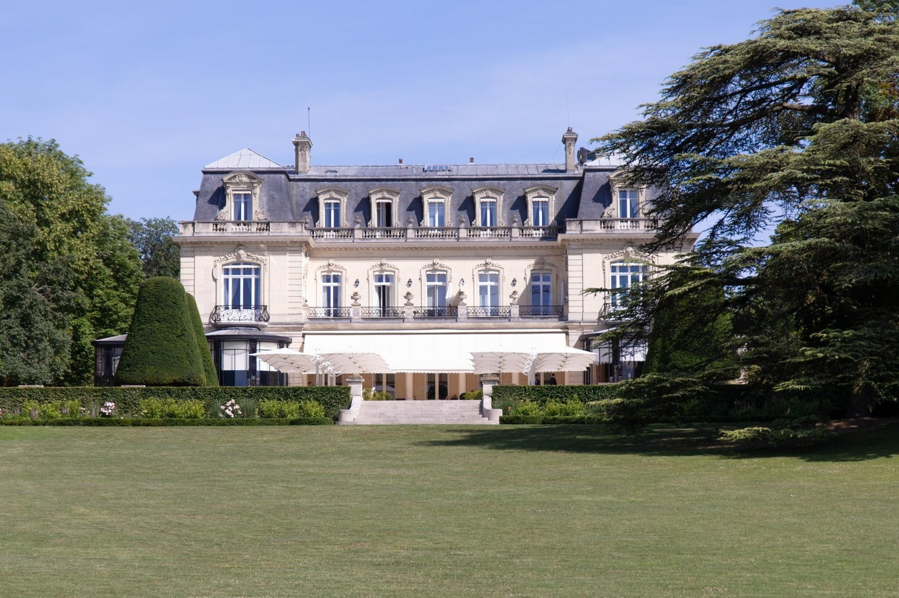
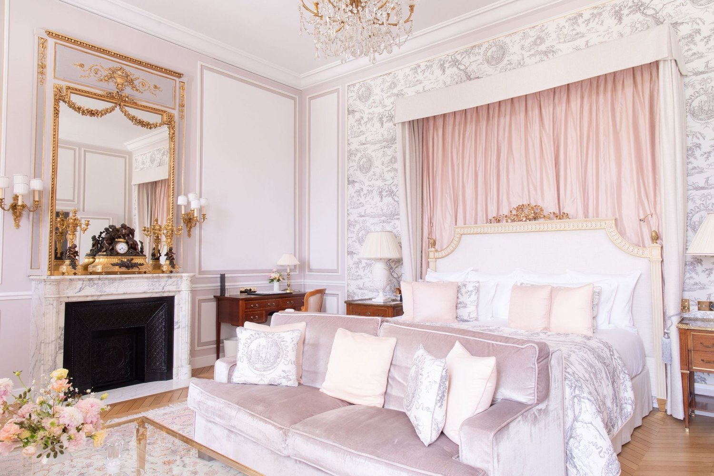
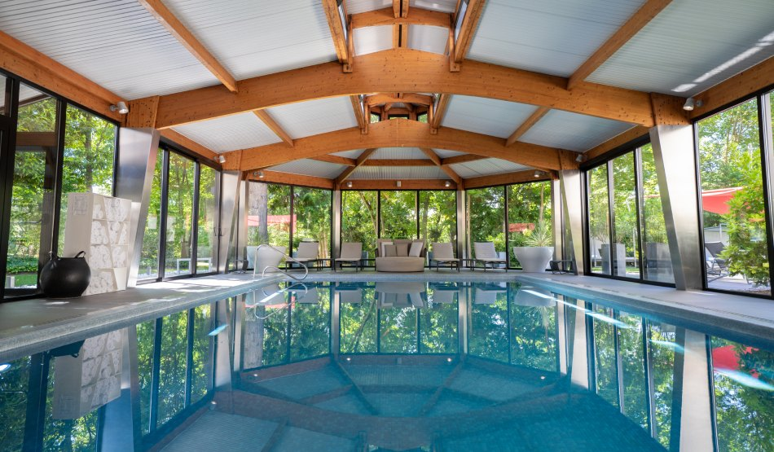
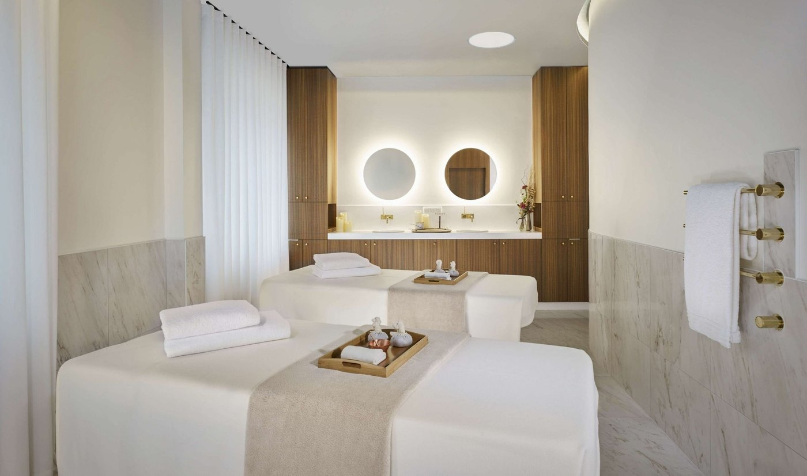
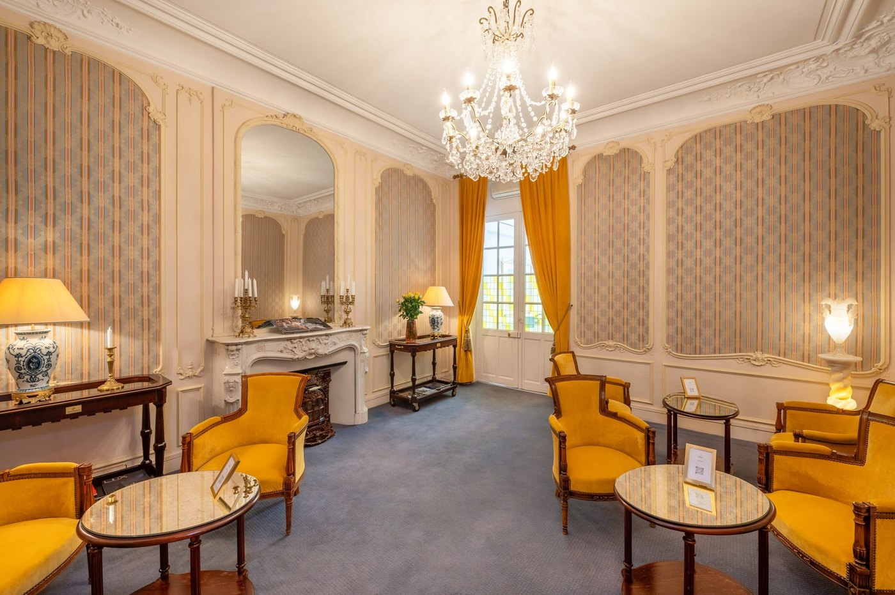

Meilleurs hôtels à Reims : 8 adresses classées en 2026
Trois 5 étoiles pour une ville de cent quatre-vingt mille habitants, dix étoiles au Guide
MICHELIN, et un spa de 1 500 m2 qui n'ouvrira qu'à la fin de l'année.
Par Lucas Lecoq, rédacteur en chef✺Publié le 1er septembre 2026✺15 min de lecture

Le Domaine Les Crayères, ancienne demeure de la famille de Polignac, dans son
parc de six hectares. Photo : site officiel de l'établissement.
L'essentielTrois adresses, trois logiques de séjour
Domaine Les Crayères, 9,2/10 : un château dans six hectares
de parc, 20 clés seulement, une table deux étoiles, et un spa de
1 500 m2 annoncé pour la fin 2026.
L'Assiette Champenoise, 9,0/10 : la seule table trois
étoiles de l'agglomération, celle d'Arnaud Lallement, avec 25 chambres et une
piscine intérieure chauffée. À Tinqueux, pas à Reims.
La Caserne Chanzy, 8,9/10 : une caserne de pompiers de 1926 devenue
5 étoiles en 2019, face à la cathédrale, avec le seul spa de la ville réellement
ouvert, plus de 450 m2.
Reims a une hôtellerie de vitrine, ce qui n'a rien d'un reproche : la ville reçoit le monde
entier depuis que le champagne existe, et elle a appris à le loger. Elle aligne
trois établissements 5 étoiles et cinq tables étoilées au Guide
MICHELIN, pour dix étoiles au total, ce qui la place très au-dessus de sa catégorie
démographique. Nous classons huit adresses par le Score LMHS sur 10 et par
l'Indice Champagne sur 5, notre indice thématique pour cette page.
Notre sélection : les 8 meilleures adresses de Reims
01

Domaine Les Crayères, vingt clés dans six hectares 9,2/10
C'est l'adresse de référence de la ville, et le rapport entre sa taille et son terrain
explique presque tout : 20 chambres et suites, réparties entre le Château
et le Cottage, dans un parc de six hectares. L'ancienne demeure de la
famille de Polignac tient le style classique français sans le caricaturer.
La table, Le Parc, est distinguée de deux étoiles au Guide
MICHELIN sous la direction de Christophe Moret ; la
Brasserie Le Jardin offre le registre plus simple, et le bar La Rotonde
complète l'ensemble. Le point à connaître avant de réserver : le spa n'existe pas
encore. La maison en annonce un pour fin 2026, signé
Pierre-Yves Rochon, de 1 500 m2 intérieur et
extérieur, avec des bassins allant jusqu'à vingt mètres, sauna, hammam, cabines et bar
bien-être. D'ici là, la maison n'a pas d'offre bien-être. Les chiens sont acceptés
moyennant cinquante euros.
20 chambres et suites · Parc de 6 hectares · Le Parc, 2 étoiles MICHELIN · Spa de 1 500 m² annoncé fin 2026 ·
Site officiel →
02

L'Assiette Champenoise, la seule table trois étoiles 9,0/10
Tinqueux, aux portes de Reims · 5 étoiles · Relais & Châteaux · Indice Champagne 4,7/5
De 430 à 2 300 € la nuit, tarifs publiés par la maison.
Il faut le dire d'emblée : l'adresse n'est pas à Reims mais à Tinqueux,
commune limitrophe, à une dizaine de minutes du centre. C'est le prix à payer pour la
seule table trois étoiles de l'agglomération, celle d'Arnaud
Lallement, et elle vaut le déplacement. La maison compte 25 chambres et
suites, de 50 m2 pour les Supérieures à
85 m2 pour la Suite n° 5 et son jardin privé, ce qui en fait
les plus vastes du classement. Elle se présente en maison de famille plutôt qu'en hôtel, et
cela s'entend au service. La piscine est intérieure et chauffée toute
l'année, ouverte de 6 h à 19 h 30 sur les jardins. Le bémol : pas de
spa, les massages se réservent à l'avance et se prennent en suite
uniquement, ce qui les réserve de fait aux catégories supérieures.
25 chambres et suites de 50 à 85 m² · 3 étoiles MICHELIN, Arnaud Lallement · Piscine intérieure chauffée · Massages en suite uniquement ·
Site officiel →
03

La Caserne Chanzy, le seul vrai spa de la ville 8,9/10
Le bâtiment a été inauguré en 1926 comme caserne de pompiers et l'est
resté jusqu'en 2019, date de sa conversion en hôtel. Il en garde son
héritage Art déco et une implantation que rien ne remplace : face
à la cathédrale Notre-Dame, à deux pas du Palais du Tau et du musée des
Beaux-Arts. C'est aussi la seule adresse de ce classement à disposer d'un
spa réellement ouvert : le spa DeepNature, installé au
13 rue Chanzy, déploie plus de 450 m2 avec jets
hydromassants, sauna, hammam, espace fitness et cinq cabines de soins. La
maison exploite trois adresses de bouche, La Grande Georgette et sa
terrasse sur la cathédrale, Little Georgette, plus décontractée, et le bar
à champagne Le Jardin d'hiver. Le bémol : l'accès au spa se facture en
supplément, et le rapport à l'échelle est celui d'un grand hôtel, pas d'une maison.
Caserne de pompiers de 1926, hôtel depuis 2019 · Face à la cathédrale · Spa DeepNature de plus de 450 m², 5 cabines · Trois restaurants et bars ·
Site officiel →
04

Grand Hôtel des Templiers, une demeure néogothique 7,8/10
22 rue des Templiers, 51100 Reims · 4 étoiles · Indice Champagne 3,8/5
C'est la meilleure affaire du classement, et elle tient à un détail que la maison ne met
pas assez en avant : le bâtiment est une demeure du XIXe siècle de style
néogothique, ce qui lui donne un caractère que les 4 étoiles récents n'ont pas.
S'y ajoute un équipement rare à ce niveau de gamme et en centre-ville :
une piscine intérieure chauffée et un sauna, installés en sous-sol, avec
un espace bien-être. La cathédrale est à dix minutes à pied. Le bémol : pas de
restaurant sur place, ce qui impose de sortir dîner, et une maison qui reste dans
un registre classique plutôt que dans le charme travaillé. Pour les séjours où l'on veut
une piscine sans payer le tarif d'un 5 étoiles.
Demeure néogothique du XIXe · Piscine intérieure chauffée et sauna · À 10 minutes à pied de la cathédrale · Pas de restaurant ·
Site officiel →
05
La Demeure des Sacres, quatre chambres rue Libergier 7,5/10
29 rue Libergier, 51100 Reims · Maison d'hôtes · Indice Champagne 3,5/5
Précision qui compte, et que beaucoup de classements escamotent : ce n'est pas
un hôtel classé. La Demeure des Sacres est une maison d'hôtes de quatre
chambres et suites, nommées La Rémoise, Art déco, Côté Jardin et Royale, dans un
hôtel particulier de la rue Libergier, l'axe qui mène droit à la cathédrale. Nous la
classons quand même, parce qu'à Reims l'offre de charme à taille humaine est rare et que
celle-ci est au bon endroit. Ce qu'il faut en attendre est ce que promet une maison
d'hôtes : peu de clés, un accueil personnalisé, une adresse qui se réserve tôt. Le bémol
est structurel : aucun service d'hôtel, ni restaurant, ni spa, ni
réception permanente, et aucun classement en étoiles à comparer avec les
autres adresses de cette page.
4 chambres et suites · Maison d'hôtes, non classée en étoiles · Rue Libergier, axe de la cathédrale · Sans restaurant ni spa
06
Les Berceaux de la Cathédrale, deux appartements 7,3/10
2 rue de la Salle, 51100 Reims · Appartements · Indice Champagne 3,2/5
Même remarque, en plus net encore : ce ne sont pas des chambres d'hôtel mais
deux appartements, pour deux à quatre personnes chacun, dans une rue du vieux
Reims à quelques pas de la cathédrale. La formule a sa logique et elle est mal représentée
dans les classements rémois : pour une famille ou deux couples qui restent plusieurs
nuits, un appartement en centre ancien vaut souvent mieux que deux chambres. Le bémol tient
à ce que la formule implique : pas de réception, pas de petit-déjeuner servi, pas
de service, et une disponibilité de deux logements seulement,
donc un calendrier qui se remplit très tôt. Ce n'est pas non plus une adresse bon marché :
les tarifs démarrent au-dessus de ceux de plusieurs 4 étoiles de cette page.
2 appartements de 2 à 4 personnes · À quelques pas de la cathédrale · Sans réception ni service hôtelier · Non classé en étoiles
07
Continental, la meilleure adresse de la place Drouet-d'Erlon 7,2/10
La place Drouet-d'Erlon est le centre nerveux de la sortie rémoise, et le Continental en
occupe le meilleur emplacement. C'est un hôtel urbain qui assume sa fonction : quatre
catégories de chambres et suites, un restaurant sur place et une terrasse
sur la place, un espace bien-être avec possibilité de massage, du matériel
de fitness et des vélos à disposition des résidents. Rien d'exceptionnel pris isolément,
mais l'ensemble tient, et à cette adresse c'est ce qu'on vient chercher. Le bémol :
pas de spa au sens propre, et une place animée le soir qui se ressent
selon l'orientation de la chambre. Pour les séjours d'affaires et les courts séjours
urbains.
4 catégories de chambres et suites · Restaurant et terrasse sur la place · Espace bien-être et fitness · Vélos à disposition ·
Site officiel →
08
Best Western Premier Hôtel de la Paix, la piscine oubliée 6,8/10
C'est le plus grand établissement du classement, et de loin :
163 chambres, à deux pas de la place Drouet-d'Erlon. On le range
habituellement dans la catégorie des adresses sans surprise, et c'est passer à côté d'un
argument réel : la maison dispose d'une piscine intérieure, ce que
beaucoup de descriptions omettent et que seules deux autres adresses de cette page peuvent
offrir. À cela s'ajoutent un restaurant, un bar et un espace fitness. Le bémol est celui de
la catégorie : l'expérience reste celle d'une enseigne internationale, l'ancrage champenois
se limite à la décoration, et l'Indice Champagne le plus bas du palmarès le dit sans
détour. Pour les familles, les groupes et les séjours où la capacité compte plus que le
caractère.
163 chambres · Piscine intérieure · Restaurant, bar et fitness · À deux pas de la place Drouet-d'Erlon ·
Site officiel →
Tableau comparatif : hôtels de Reims 2026
Adresse
Étoiles
Score LMHS
Indice Champagne
Clés
Table étoilée
Spa
Piscine
Pour qui
Domaine Les Crayères
5
9,2/10
4,8/5
20
Le Parc, 2 étoiles
Annoncé fin 2026
Annoncée fin 2026
Prestige, table
L'Assiette Champenoise
5
9,0/10
4,7/5
25
3 étoiles, A. Lallement
Non
Intérieure chauffée
Gastronomie
La Caserne Chanzy
5
8,9/10
4,5/5
n. c.
Non
DeepNature, 450 m²
Non
Cathédrale, bien-être
Grand Hôtel des Templiers
4
7,8/10
3,8/5
n. c.
Non
Espace bien-être
Intérieure chauffée
Budget, piscine
La Demeure des Sacres
n. c.
7,5/10
3,5/5
4
Non
Non
Non
Maison d'hôtes
Les Berceaux de la Cathédrale
n. c.
7,3/10
3,2/5
2
Non
Non
Non
Appartements, familles
Continental
4
7,2/10
3,0/5
n. c.
Non
Espace bien-être
Non
Affaires, centre
BW Premier Hôtel de la Paix
4
6,8/10
2,8/5
163
Non
Non
Intérieure
Familles, groupes
Classement par Score LMHS. Score moyen des huit adresses : 8,0/10. Indice
Champagne moyen : 3,8/5. Informations relevées le 1er septembre 2026 sur les sites
officiels des établissements et auprès du Guide MICHELIN. Les mentions « n. c. » signalent une
donnée que l'établissement ne publie pas, ou un classement en étoiles qui n'existe pas pour ce
type d'hébergement.
Protocole LMHS : comment nous avons classé ces adresses
L'Indice Champagne, noté sur 5, est un indice thématique propre à cette
page. Il mesure l'immersion champenoise et rien d'autre : ancrage dans le bâti
rémois, rapport au vignoble et aux maisons de champagne,
table et produits régionaux, savoir-faire mobilisés et
échelle de la maison. Le Score LMHS sur 10 évalue la
globalité, réserves comprises, et relève de la grille LMHS
Destination.
Deux adresses de cette page ne sont pas des hôtels, et nous préférons
l'écrire que le laisser deviner. La Demeure des Sacres est une maison d'hôtes de quatre
chambres, Les Berceaux de la Cathédrale sont deux appartements. Ni l'une ni les autres ne sont
classées en étoiles. Elles figurent ici parce que l'offre de charme à taille humaine est rare à
Reims et que leur emplacement est excellent, mais leur ligne du tableau porte « n. c. » plutôt
qu'un classement inventé.
Ce palmarès est documentaire. Nous n'avons pas effectué de séjour de
contrôle. Catégories, capacités, tables, distinctions et équipements ont été relevés le
1er septembre 2026 sur les sites officiels et auprès du Guide MICHELIN. Aucun
partenariat commercial, aucune affiliation. Les seuls tarifs publiés sont ceux que
l'établissement affiche lui-même sur son site.
Reims : ce qu'il faut savoir avant de réserver
Cinq tables étoilées, dix étoiles. C'est le chiffre le plus utile de cette
page, et il est considérable pour une ville de cette taille. L'Assiette
Champenoise d'Arnaud Lallement détient trois étoiles.
Arbane, ouvert par Philippe Mille en mars 2024 dans un hôtel
particulier de la rue Noël, en a décroché deux en 2026, sa première promotion.
Le Parc, au Domaine Les Crayères, en compte deux également
sous Christophe Moret. Racine, de Kazuyuki Tanaka, et Le
Millénaire complètent la liste avec une étoile chacun. Deux de ces cinq tables sont
dans un hôtel : celle des Crayères et celle de L'Assiette Champenoise.
Le spa est le point faible de la ville, et cela va changer. Sur les trois
5 étoiles, un seul dispose aujourd'hui d'un spa ouvert, celui de La Caserne
Chanzy. Les Crayères n'en a pas encore et annonce 1 500 m2 pour la fin 2026,
L'Assiette Champenoise n'en a pas et ne se limite qu'aux massages en suite. Qui vient à Reims
pour un séjour bien-être en 2026 n'a donc, pour l'essentiel, qu'une seule adresse.
Trois piscines seulement, et pas là où on les attend. L'Assiette
Champenoise, le Grand Hôtel des Templiers et le Best Western Premier Hôtel de la Paix. Un
4 étoiles de centre-ville et une enseigne internationale offrent donc ce que deux des trois
5 étoiles n'ont pas.
Paris est à quarante-cinq minutes en TGV, ce qui fait de Reims l'une des
rares villes de province où un week-end de deux nuits ne coûte pas une demi-journée de trajet.
La cathédrale Notre-Dame et le palais du Tau sont inscrits au patrimoine mondial de l'UNESCO,
et les grandes maisons de champagne ouvrent leurs caves de craie à la visite.
Questions fréquentes sur les hôtels de Reims
Quel est le meilleur hôtel de Reims ?
Selon nos relevés 2026, le Domaine Les Crayères obtient la meilleure
note, 9,2/10 : un château 5 étoiles Relais & Châteaux de
20 chambres seulement, dans un parc de six hectares, avec
une table deux étoiles au Guide MICHELIN. Pour la gastronomie au plus haut niveau,
L'Assiette Champenoise et ses trois étoiles lui sont préférables ; pour un séjour
bien-être, La Caserne Chanzy est la seule des trois à disposer d'un spa ouvert.
Combien de restaurants étoilés à Reims ?
Cinq tables, dix étoiles dans la sélection 2026. L'Assiette
Champenoise, d'Arnaud Lallement, en compte trois. Arbane, de Philippe
Mille, et Le Parc, de Christophe Moret au Domaine Les Crayères, en comptent
deux chacun. Racine, de Kazuyuki Tanaka, et Le Millénaire en ont
une. Seules deux de ces cinq tables sont installées dans un hôtel.
Quel hôtel de Reims a un spa ?
En 2026, un seul parmi les adresses de ce classement :
La Caserne Chanzy, dont le spa DeepNature déploie plus de
450 m2 avec jets hydromassants, sauna, hammam, fitness et cinq
cabines de soins. Le Domaine Les Crayères annonce un spa de 1 500 m2
signé Pierre-Yves Rochon pour la fin 2026. L'Assiette Champenoise ne
propose que des massages, en suite uniquement.
Quels hôtels de Reims ont une piscine ?
Trois. L'Assiette Champenoise, à Tinqueux, avec une piscine intérieure
chauffée toute l'année, ouverte de 6 h à 19 h 30. Le Grand Hôtel des
Templiers, avec une piscine intérieure chauffée et un sauna en sous-sol. Et le
Best Western Premier Hôtel de la Paix, qui dispose lui aussi d'une piscine
intérieure, ce que peu de descriptions signalent.
Quel hôtel est le plus proche de la cathédrale de Reims ?
La Caserne Chanzy est face à la cathédrale Notre-Dame, à proximité
immédiate du palais du Tau et du musée des Beaux-Arts. Les Berceaux de la Cathédrale, rue
de la Salle, et La Demeure des Sacres, rue Libergier, en sont également à quelques pas. Le
Grand Hôtel des Templiers est à une dizaine de minutes de marche.
Toutes ces adresses sont-elles des hôtels classés ?
Non, et c'est une distinction utile. Six le sont : trois 5 étoiles et trois 4 étoiles.
Les deux autres relèvent d'une autre catégorie d'hébergement. La Demeure des
Sacres est une maison d'hôtes de quatre chambres et
Les Berceaux de la Cathédrale sont deux appartements.
Aucune des deux n'est classée en étoiles, et aucune ne propose de service hôtelier.
Le mot de LucasUne ville qui reçoit depuis toujours
Reims fausse les comparaisons. Cent quatre-vingt mille habitants, trois 5 étoiles et dix étoiles au Guide MICHELIN : aucune ville française de cette taille n'aligne cela, et la raison n'est pas touristique, elle est commerciale. Le champagne fait venir des acheteurs depuis deux siècles, et il a fallu les loger et les nourrir à leur niveau. Ce qui me frappe en établissant ce classement, c'est le décalage entre la table et le bien-être. La gastronomie rémoise est arrivée à maturité ; le spa, lui, n'existe pratiquement pas. Un seul est ouvert dans toute la ville, et le plus ambitieux se fait attendre. Il y a là une année de transition à observer : quand les 1 500 mètres carrés des Crayères ouvriront, ce classement ne ressemblera plus à celui-ci.
Lucas Lecoq, rédacteur en chef
Méthode et sources
8 adresses de Reims et de son agglomération classées par le Score LMHS sur
10, issu de la grille LMHS Destination, et par l'Indice Champagne sur
5, indice thématique propre à cette page : ancrage dans le bâti rémois, rapport au
vignoble et aux maisons de champagne, table et produits régionaux, savoir-faire mobilisés,
échelle de la maison. Score moyen des huit adresses : 8,0/10. Indice Champagne moyen : 3,8/5.
Aucun séjour de contrôle n'a été effectué. Catégories, capacités, tables,
distinctions et équipements relevés le 1er septembre 2026 sur les sites officiels
des établissements et auprès du Guide MICHELIN. Les seuls tarifs publiés sont ceux
que l'établissement affiche lui-même, ce qui ne concerne ici que L'Assiette
Champenoise. Aucun partenariat commercial, aucune affiliation. Photographies : Domaine Les
Crayères, L'Assiette Champenoise, La Caserne Chanzy et Grand Hôtel des Templiers, sites
officiels.
8 adressesIndice Champagne /5Sans séjour de contrôle0 partenariat